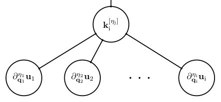
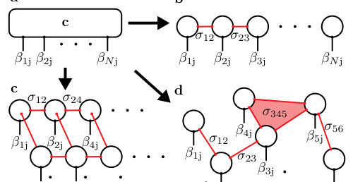
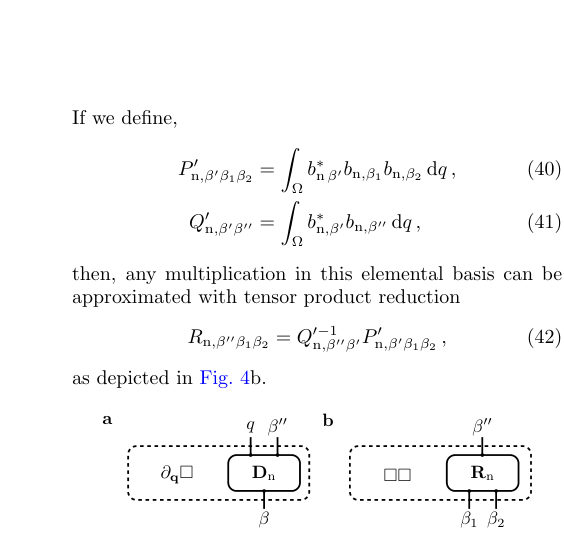

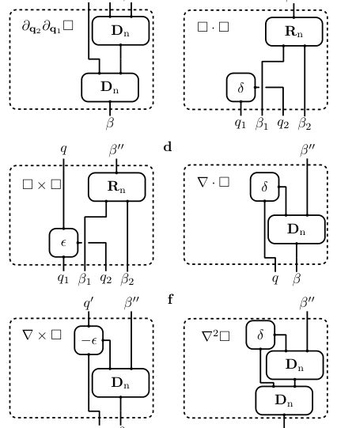
Authors: Takahiro Anan, Takahiro Morimoto
Type: theory · Category: other · PDF: https://arxiv.org/pdf/2607.13559v1
Analysis basis: full PDF text, analyzed in chunks
Topic relevance: spintronics-quantum-optics interface 3/5 · Keldysh / 2PI / non-Gaussian methods 2/5 · exotic spin models in light-matter 1/5 · non-equilibrium dynamics 1/5
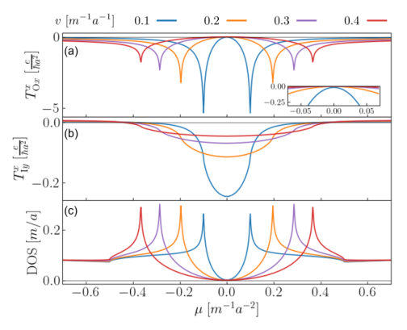
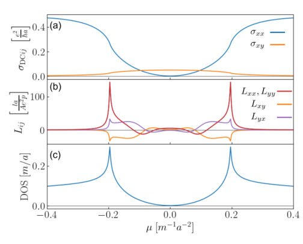
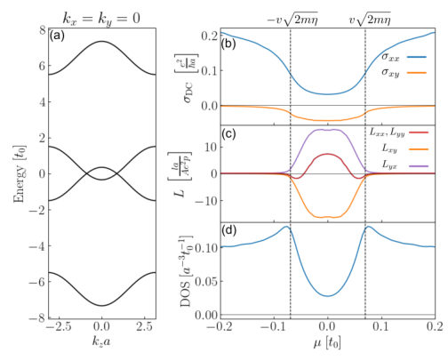
Summary. This paper theoretically analyzes how magnetic dynamics induce an 'emergent induction' in Weyl semimetals. It derives the magnetoelectric response by separating contributions into intraband (dissipative) and interband (topological) parts. The key finding is that these systems inherently behave as emergent inductors due to strong magnetoelectric coupling, particularly when the chemical potential lies within the topological energy gap.
Why it may be interesting. The concept of emergent induction mediated by topological band structures (Weyl nodes) provides a mechanism linking magnetism, topology, and macroscopic electromagnetic responses, which is relevant to advanced spintronic/topological materials research.
Main problem. The study investigates emergent electromagnetic responses, specifically 'emergent induction,' arising in magnetic Weyl semimetals due to underlying magnetic dynamics.
Main result. The magnetoelectric response is shown to have distinct intraband and interband contributions; the system generally acts as an emergent inductor due to this coupling.
Method. Theoretical derivation using Boltzmann transport theory for intraband effects and the Kubo formula for interband contributions, applied to effective two-band models.
Model / system. The physical system is a magnetic Weyl semimetal, modeled using effective two-band Hamiltonians that incorporate time-dependent magnetization acting as an emergent vector potential. The analysis applies this formalism to polar Weyl ferromagnets.
Key observables. Magnetoelectric (ME) response ($\langle M au angle$ and $\mathcal{C}_I$), inductance ($L$, $L_{ ext{long}}$, $L_{ ext{Hall}}$), and conductivity components ($\sigma_{DC,O}$ and $\sigma_{DC,Hall}$).
Important parameters / regimes. Relaxation time ($ au$), chemical potential ($\mu$), Weyl node separation/Fermi arc length, and the magnitude of magnetization dynamics.
Assumptions / limitations. The analysis relies on separating the ME response into dissipative intraband and non-dissipative interband parts, and uses approximations regarding the relative magnitudes of different conductivity components in later sections.
Figures summary. Figures illustrate the chemical potential dependence of both the Fermi surface term ($\mathcal{C}_{O}$) and the interband effect term ($\mathcal{C}_I$), as well as the $\mu$ dependence of conductivity and inductance for specific models.
Paper structure. The paper develops a general theory by deriving ME responses from transport equations, separates contributions into intraband/interband terms, applies this to polar Weyl ferromagnets to calculate inductance components ($L_{ ext{long}}, L_{ ext{Hall}}$), and concludes with generalized expressions for the inductive response.
We theoretically study emergent electromagnetic responses in Weyl semimetals. Focusing on magnetic Weyl semimetals, we develop a general theory of emergent induction driven by magnetic dynamics. We show that magnetoelectric (ME) responses in Weyl semimetals give rise to emergent induction mediated by magnetization dynamics. Using effective two-band models for magnetic Weyl semimetals, we derive a formula for the ME response that includes both intraband and interband contributions. The resulting formula shows that the intraband contribution is proportional to the relaxation time $τ$, whereas the interband contribution is associated with the separation of the Weyl nodes. Applying the general formula to a model of polar Weyl ferromagnets, we demonstrate that the dynamics of the toroidal moment is closely related to the emergent inductive response in polar Weyl ferromagnets, as recently discovered by Suzuki et al. [Y. Suzuki et al. arXiv:2607.12322]. The chemical-potential dependence of the inductance indicates that the emergent electromagnetic response is enhanced in the energy range of the Weyl dispersion, reflecting the topological nature of Weyl semimetals.
Authors: Abhijatmedhi Chotrattanapituk, Michael J. Landry, Chu-Liang Fu, Mingda Li
Type: theory · Category: numerical methods · PDF: https://arxiv.org/pdf/2607.13129v1
Analysis basis: full PDF text, analyzed in chunks
Topic relevance: methods for driven-dissipative 3/5 · Keldysh / 2PI / non-Gaussian methods 1/5 · analog quantum simulation 1/5 · driven-dissipative phase transition 1/5




Summary. The paper introduces Tensor-Network Finite Elements, a novel framework that unifies the solution of diverse operator equations—from PDEs to delay equations. It achieves this by translating continuous differential operators into structured tensor forms and minimizing the resulting residual error within a constrained TN variational space. This offers a general, powerful computational tool for modeling complex physical systems.
Why it may be interesting. This work provides a powerful computational bridge between established numerical analysis (FEM) and modern quantum many-body simulation techniques (TNs), offering a general toolset for solving complex physical models beyond standard quantum chemistry or condensed matter simulations.
Main problem. The core problem is developing a unified framework to solve analytic Operator Equations (OEs), including PDEs, IDEs, and MDEs, by connecting Finite-Element (FE) discretization with Tensor Network (TN) variational representations.
Main result. The authors establish a direct connection between the FE numerical formalism and TN variational algorithms, allowing highly non-linear partial differential equations to be reformulated as weighted-residual optimization problems over TN degrees of freedom.
Method. The method involves discretizing OEs using FE methods, which generates multilinear interaction tensors. These are then approximated and optimized within a Tensor Network ansatz (like MPS or PEPS) by minimizing a weighted residual norm subject to the TN manifold constraint.
Model / system. The framework is general, applying to various OEs such as nonlinear diffusion equations, initial-value problems, integro-differential equations, and memory/delay equations. The underlying mathematical structure involves mapping continuous operators onto discrete tensor representations.
Key observables. Controlled error reproduction of conventional solutions (e.g., 1D diffusion), preservation of boundary conditions (Neumann).
Important parameters / regimes. Bond dimensions ($\sigma$), maximum bond degree ($M$), time step size ($\Delta t$), and the order of basis expansion ($B$).
Assumptions / limitations. The primary assumptions include assuming locality of correlation to use MPS/PEPS ansatzes, and that the solution admits a compact tensor-network representation for computational tractability.
Figures summary. Figure 1 illustrates the contraction of interaction kernels in TNs. Figure 2 shows the TN representation of an operator's left-hand side. Figures 7 and 8 demonstrate numerical convergence tests on nonlinear diffusion problems using both standard methods and the proposed TN variational approach.
Paper structure. The paper builds from general FE discretization theory to handling non-linearity by upgrading the Hilbert space to Fock space. It then shows how the resulting large coefficient tensors are compressed via TN ansatzes, culminating in optimization procedures tested on specific diffusion examples.
Operator equations (OEs) underpin quantitative modeling across science and engineering. Finite-element (FE) methods discretize continuous OEs into finite-dimensional algebraic systems, whereas tensor networks (TNs) provide flexible variational representations of correlated discrete systems. Here, we develop a framework that connects FE with TN for analytic OEs. The power of this method comes from its ability to convert highly non-linear partial differential equations into linear matrix equations. In particular, we show that FE discretization induces a hierarchy of multilinear interaction tensors, through which differential, integral, nonlinear, memory, and delay equations can be expressed within a common algebraic structure. The resulting systems are reformulated as weighted-residual optimization problems over TN degrees of freedom. Matrix-product-state calculations for one-dimensional linear and nonlinear diffusion reproduce conventional solutions with controlled error while preserving continuity and Neumann boundary conditions. The framework provides a common variational language for analytic OEs and establishes a direct connection between FE numerical formalism and TN variational algorithms, offering a general foundation for TN-based and quantum-inspired approaches to solving OEs.
Authors: G. Pellicer, C. Sabater
Type: experiment · Category: other · PDF: https://arxiv.org/pdf/2607.14074v1
Analysis basis: full PDF text, analyzed in chunks
Topic relevance: Kondo & dissipative impurity 2/5 · quantum measurements 2/5 · analog quantum simulation 1/5 · correlated / nonlocal dissipation 1/5 · driven-dissipative phase transition 1/5 · methods for driven-dissipative 1/5 · non-equilibrium dynamics 1/5
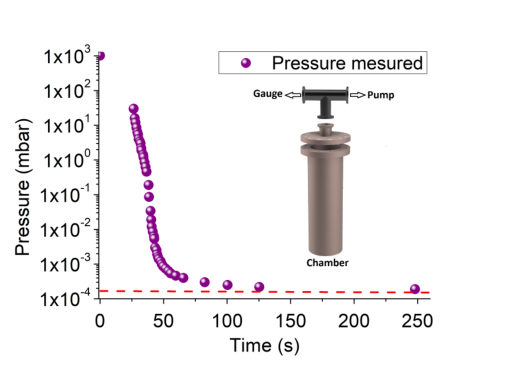
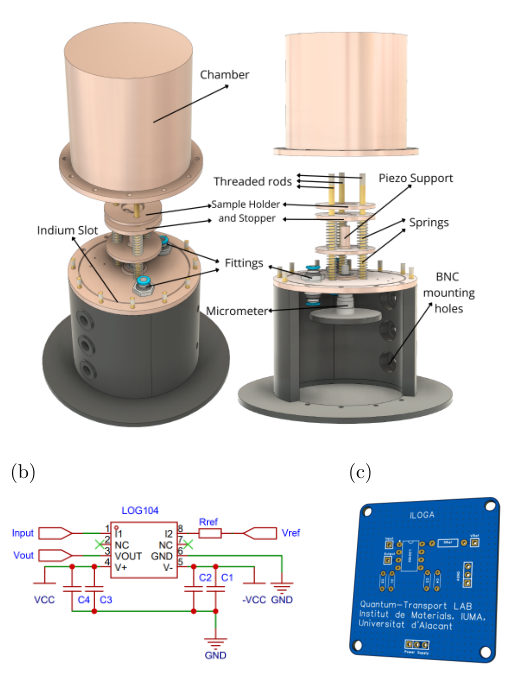
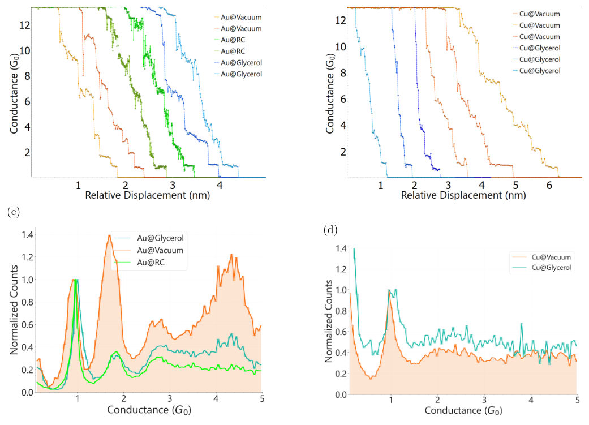
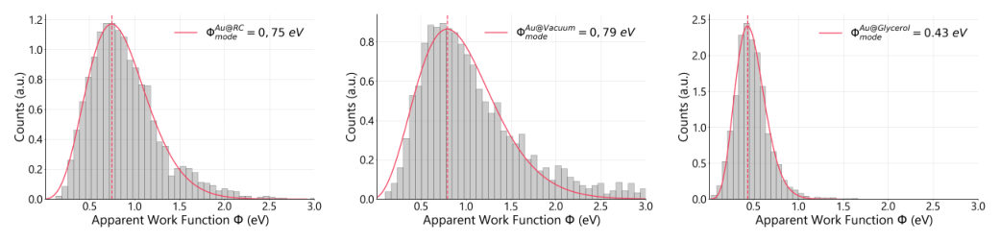
Summary. This paper introduces a novel, low-cost 3D-printed platform for conducting room-temperature quantum transport measurements using break junctions. By analyzing conductance decay in the tunneling regime, the authors systematically extract the apparent work function ($\phi$) of contacts across different environments. This establishes an accessible and reproducible framework for nanoscale research on reactive materials.
Why it may be interesting. While focused on solid-state electronics, the rigorous statistical analysis of quantum transport signatures ($\phi$ distribution) provides valuable insights into surface physics and interface phenomena relevant to open quantum systems modeling.
Main problem. To develop an accessible, low-cost methodology for performing quantum transport measurements on reactive materials at room temperature.
Main result. The study successfully resolved the conductance quantum in highly reactive contacts and established that the apparent work function distribution follows a non-central chi-square distribution, matching theoretical predictions accounting for atomic roughness.
Method. Measurements were performed using a custom 3D-printed break junction setup to characterize current decay (tunneling regime) across various environments (vacuum, glycerol).
Model / system. The system uses a Mechanically Controllable Break Junction (MCBJ) housed in a PLA vacuum chamber. Quantum transport is analyzed using the Landauer formalism, relating conductance decay exponentially to the apparent work function ($\phi$).
Key observables. Conductance quantum ($G_0$), Apparent Work Function ($\phi$), Statistical distribution of $\phi$ (non-central chi-square).
Important parameters / regimes. Room temperature operation, high vacuum capability ($1.4 imes 10^{-4}$ mbar), and the dependence on environmental adsorbates.
Assumptions / limitations. The analysis assumes linearity in the tunneling regime for work function extraction and that the PLA platform is structurally sound for pressure differentials up to 1 atm.
Figures summary. Figures illustrate hardware setups, vacuum pump-down curves, conductance histograms showing $1G_0$ peaks across environments, and statistical fits of $\phi$ distributions using non-central chi-square models.
Paper structure. The paper details the low-cost experimental platform construction, presents measurements on reactive metals (Cu) in various atmospheres to test environmental robustness, and then uses Au as a benchmark to systematically extract and statistically analyze the apparent work function ($\phi$) from tunneling decay traces.
We present a low-cost, 3D-printed high-vacuum platform integrating a mechanically controllable break-junction system and a custom logarithmic amplifier for room-temperature quantum transport measurements. Using copper as a highly reactive test case, we successfully resolve the $1G_0$ conductance quantum under both high vacuum and anhydrous glycerol, demonstrating the effectiveness of these environments against rapid atmospheric oxidation. In parallel, utilizing gold as a robust benchmark, we systematically extract the apparent work function ($φ$) from thousands of tunneling traces across ambient air, vacuum, and glycerol. Our analysis demonstrates that the statistical distribution of $φ$ rigorously follows a non-central chi-square distribution. The obtained gold work functions match existing literature across all environments. Although lower than bulk values, they perfectly align with theoretical models accounting for atomic-scale roughness, apex geometry, and environmental adsorbates. Ultimately, this methodology establishes an accessible and reproducible framework for systematic nanoscale research on reactive materials.
Authors: P. Schlottmann
Type: theory · Category: other · PDF: https://arxiv.org/pdf/2607.13194v1
Analysis basis: full PDF text, analyzed in chunks
Topic relevance: analog quantum simulation 2/5 · spintronics-quantum-optics interface 2/5 · Keldysh / 2PI / non-Gaussian methods 1/5 · Kondo & dissipative impurity 1/5
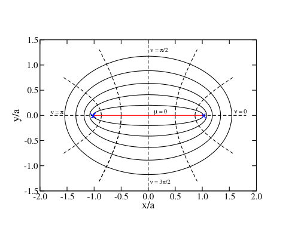
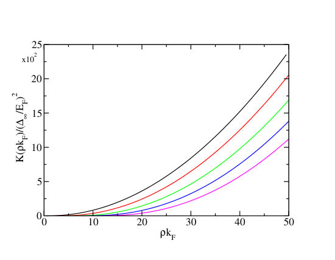
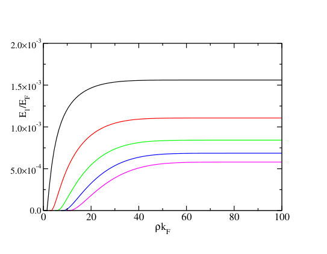
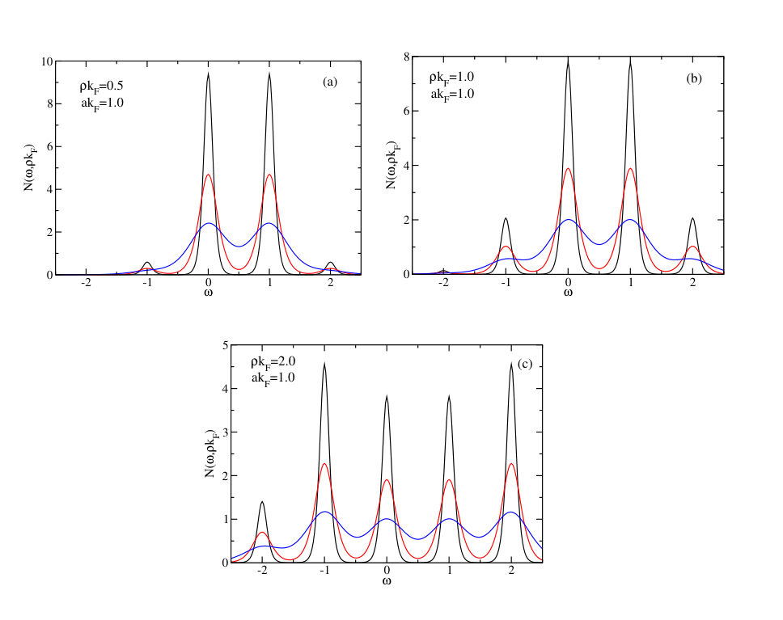
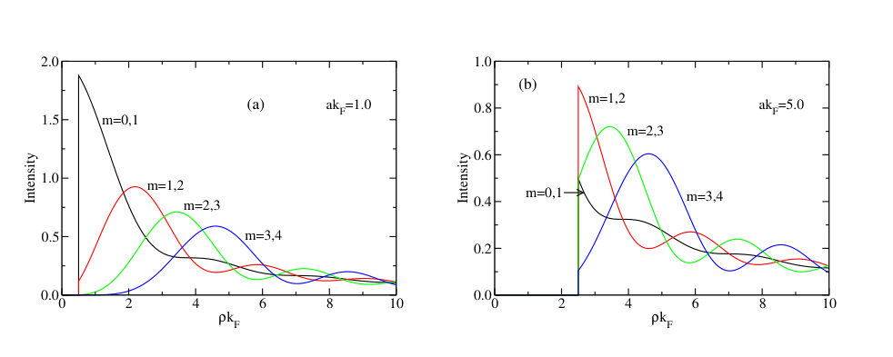
Summary. This paper theoretically analyzes the bound states trapped in a line-shaped vortex within a 2D topological superconductor. By solving the Bogoliubov-de Gennes equations using elliptical coordinates, the authors predict the existence of a zero-energy Majorana state and quantized excited states. The findings provide crucial theoretical predictions for detecting topologically protected quantum phenomena in superconducting materials.
Why it may be interesting. This work provides a detailed theoretical framework for predicting robust zero-energy modes (Majorana fermions) in superconducting topological systems, which is highly relevant to realizing topological quantum computation platforms.
Main problem. The study investigates zero-energy fermion bound states trapped within a line-shaped vortex core of a two-dimensional topological superconductor.
Main result. A zero-energy Majorana state is predicted to exist, alongside equally spaced excited states whose energies are determined by solving the Bogoliubov-de Gennes equations in elliptical coordinates.
Method. The analysis involves solving coupled differential equations derived from the BdG formalism using specialized techniques suited for line defects, including matching solutions across different radial regimes.
Model / system. The system is a 2D electron gas on a topological insulator surface, subjected to proximity-induced s-wave superconductivity and Rashba spin-orbit coupling. The geometry necessitates the use of elliptical coordinates $(\mu, u)$ due to the line-shaped vortex.
Key observables. Zero-energy Majorana state ($E_0=0$), quantized excited state energies ($E_m$), and the Local Density of States (LDOS) measured via STM.
Important parameters / regimes. The superconducting gap $\Delta(r)$ vanishes along the line defect ($\mu=0$); parameters include Fermi velocity ($v_F$) and coupling strengths.
Assumptions / limitations. Approximations are made in solving differential equations, particularly concerning the decay function $K( ilde{ ho})$ and neglecting higher-order terms in perturbative matching procedures.
Figures summary. Figures illustrate elliptical coordinates defining the vortex geometry; one shows the decay function $K( ilde{ ho})$; another tracks the convergence of excited state energy $E_1$; and a final figure demonstrates the characteristic asymmetry in the LDOS spectrum for different spin components.
Paper structure. The paper progresses from setting up the physical model and Hamiltonian in elliptical coordinates, to solving the BdG equations using Bessel/Hankel functions across matching boundaries ($ ilde{ ho}_c$), culminating in deriving quantized energy expressions via perturbative matching conditions.
Fermion bound states in the core of a line-shaped vortex of a two-dimensional topological superconductor are investigated. The superconducting pairing potential, described in terms of elliptical coordinates, vanishes along a line defect with the two foci at the endpoints. The superconductivity is induced into a topological insulator via proximity effect with a type II s-wave superconductor. The spin and the momentum are perpendicularly locked by the strong spin-orbit coupling via Rashba interaction. A zero-energy Majorana state arises from the Berry phase together with a sequence of equally spaced fermion exitations. By solving the Bogoliubov-de Gennes equations using the method employed by Caroli, de Gennes and Matricon we calculate the energies, the wave-functions and spin-polarization of the bound states. An analytic expression for the local density of states within the vortex is obtained.
Authors: Xiaoqian Liu, Arsen Herasymchuk, Yaroslav Zhumagulov, Oleg V. Yazyev
Type: theory · Category: other · PDF: https://arxiv.org/pdf/2607.13294v1
Analysis basis: full PDF text, analyzed in chunks
Topic relevance: analog quantum simulation 2/5 · Frenkel-Kontorova 1/5 · methods for driven-dissipative 1/5
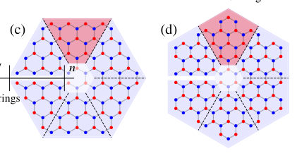
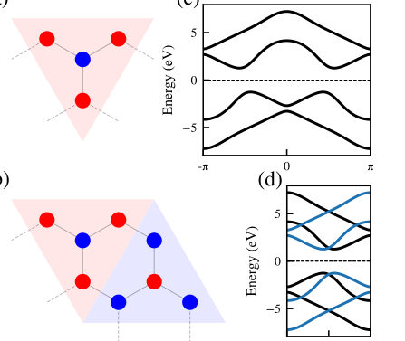
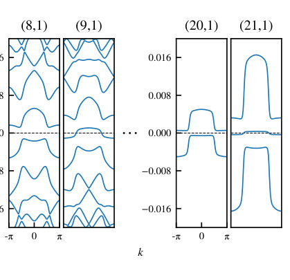
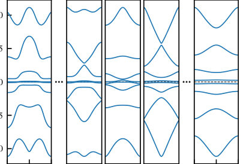
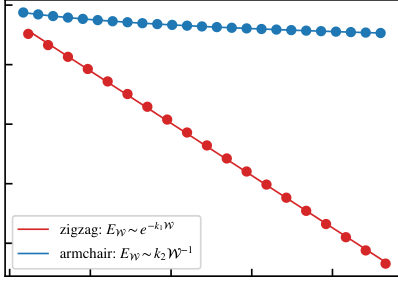
Summary. This paper theoretically examines graphene nanohelicoids by modeling their electronic structure using a tight-binding approach that incorporates anti-chiral symmetry. Key findings show that the band gap oscillates periodically with width, and the topological invariant (Zak phase) alternates between trivial and nontrivial states. This work provides deep insight into how geometric curvature dictates the fundamental quantum electronic properties of 2D materials.
Why it may be interesting. While focused on condensed matter topology, the concept of engineered geometric constraints leading to protected electronic states (like those derived from symmetry) is highly relevant to designing quantum materials for novel quantum devices.
Main problem. The study investigates the electronic properties and topological characteristics of graphene nanohelicoids (GNHs), which are structures where the honeycomb lattice is curved onto a helicoidal surface.
Main result. The band gap size in GNHs exhibits periodic closing and reopening as the width changes, accompanied by an alternating Zak phase that switches between trivial and nontrivial values.
Method. The authors employed the tight-binding approximation to derive effective one-dimensional lattice models from the 3D helical structure, supplemented by mathematical derivations involving recurrence relations for associated polynomials.
Model / system. The physical system is Graphene Nanohelicoids (GNHs). The model uses an effective 1D tight-binding Hamiltonian exhibiting anti-chiral symmetry ($E_v(k)=-E_c(k+\pi)$), contrasting with standard chiral symmetries.
Key observables. Band structure, Zak phase, band gap size, and the spectral relation $E_v(k) = -E_c(k + \pi)$.
Important parameters / regimes. Structure width ($W$), edge termination (zigzag vs. armchair), and momentum shift ($\pi$).
Assumptions / limitations. The analysis primarily uses the tight-binding approximation, considering only intralayer coupling, and relies on deriving analytic models for the effective 1D chain.
Figures summary. Figures illustrate the GNH lattice model, compare band structures under anti-chiral vs. chiral constraints, and show how gap dependence varies with width or radius changes for zigzag and armchair edges.
Paper structure. The paper systematically analyzes the electronic structure by first establishing the effective 1D model and symmetry properties (anti-chiral). It then details results based on edge termination (zigzag vs. armchair), concluding with advanced mathematical derivations concerning determinants and topological invariants using recurrence relations.
We introduce graphene nanohelicoids, geometric analogues of graphene nanoribbons, in which the honeycomb lattice is embedded on a helicoidal surface. Starting from the three-dimensional helical structure, we construct effective one-dimensional lattice models with band structures characterized by a momentum-shifted particle-hole relation $E_v(k)=-E_c(k+π)$ that reflects an anti-chiral symmetry arising from the nonsymmorphic symmetry. A systematic investigation of graphene nanohelicoids using the tight-binding approximation reveals a number of trends upon varying width and edge orientation, for instance, alternating transitions between semiconducting and metallic regimes. As the structure width varies, the band gap periodically closes and reopens, accompanied by an alternating Zak phase that switches between trivial and nontrivial. We derive an analytic tight-binding model and introduce a continuous deformation of the graphene nanohelicoids that explains the origin of width-dependent band inversion and alternating Zak phase.
Authors: Jin-Peng Yang, Yan-Hong Qin
Type: theory · Category: other · PDF: https://arxiv.org/pdf/2607.13773v1
Analysis basis: full PDF text, analyzed in chunks
Topic relevance: interference shaping light 1/5
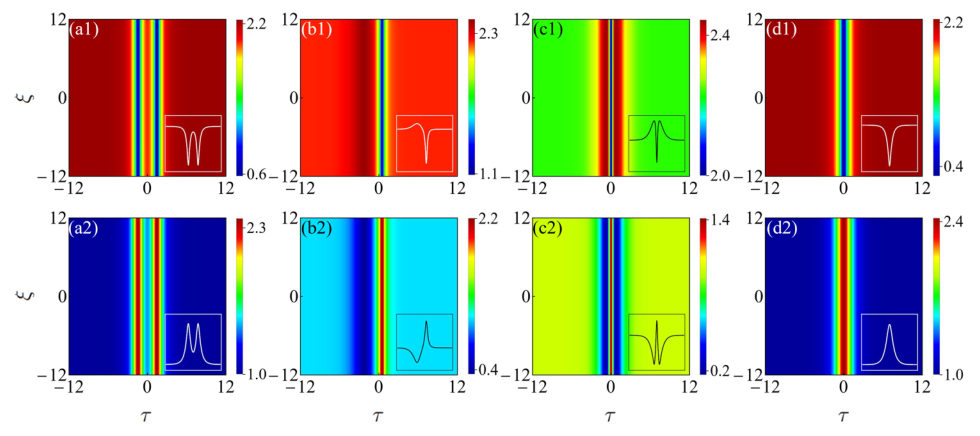
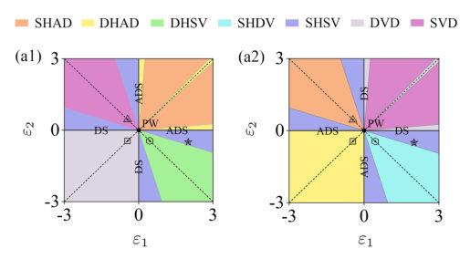
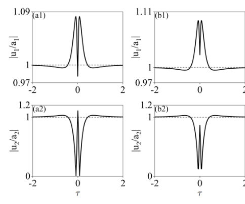
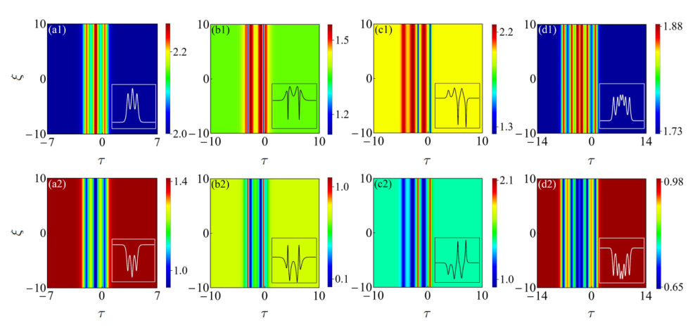
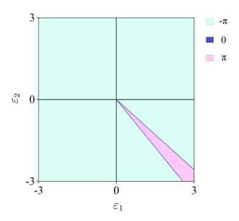
Summary. This paper presents the discovery of a previously unknown family of multihump-multivalley solitons (MHMVSs) using the Darboux transformation method on birefringent optical fibers. The research establishes that these solutions possess distinct topological characteristics, notably linking the virtual monopole field to both intensity zeros and poles in the complex plane.
Why it may be interesting. This work is highly relevant for theoretical physicists in quantum optics and open quantum systems as it provides new exact analytical solutions (MHMVSs) and reveals novel topological features within a coupled nonlinear wave system framework.
Main problem. The study aims to systematically derive and analyze multihump-multivalley soliton (MHMVS) families existing on a plane wave background within birefringent optical fibers.
Main result. The authors obtained exact solutions for MHMVSs, including arbitrary configurations (AMHMVSs), demonstrating a previously unknown soliton family and revealing that the virtual monopole field is equally determined by intensity zeros and poles.
Method. Exact solutions were derived using the Darboux transformation method applied to the two-component Fokas-Lenells equations. Stability was confirmed via numerical simulations under weak white noise.
Model / system. The physical system modeled is birefringent optical fibers, governed by the integrable two-component Fokas-Lenells equations (CFL equations). This system is an extension of the Manakov model incorporating self-steepening and spatio-temporal coupling effects.
Key observables. Multihump-Multivalley Solitons (MHMVSs), Arbitrary MHMVSs (AMHMVSs), virtual monopole field, intensity profiles (e.g., cube, star, hexagonal patterns).
Important parameters / regimes. Birefringence parameters ($\eta$), background wave amplitude ($a_s$), and spectral parameters ($\kappa$).
Assumptions / limitations. The analysis is restricted to solitons propagating on a plane wave background, contrasting with previous work limited to vanishing backgrounds.
Figures summary. Figure 1 illustrates example intensity structures of MHMVSs on the plane wave, showing various patterns like cube, star, hexagonal, and triangular configurations.
Paper structure. The paper systematically derives solutions using the Darboux transformation method, classifies fundamental solutions via phase diagrams, analyzes the topological structure related to the virtual monopole field, and confirms stability through numerical simulations.
We obtain a family of multihump-multivalley solitons (MHMVSs) on a plane-wave background in birefringent optical fibers governed by the two-component Fokas-Lenells equations, with exact solutions derived via the Darboux transformation method. The fundamental solutions are systematically classified through their phase diagrams, and higher-order configurations are identified as well. Notably, the construction extends to solitons with arbitrary MHMV structures, a class of solutions previously unreported in two-component integrable systems. Numerical simulations confirm the robustness of these solutions under weak white noise. Furthermore, analysis of their topological structure reveals that the virtual monopole field is determined equally by the intensity zeros and poles of MHMVSs in the complex plane, a feature that has remained unrecognized in previous studies of nonlinear wave topological phases. These findings reveal a previously unknown soliton family on a plane-wave background along with a distinct topological feature within the two-component framework, thereby enriching the broader understanding of topological phases of nonlinear waves.
Authors: Md Aktar Hossain, Saikat Das
Type: theory · Category: other · PDF: https://arxiv.org/pdf/2607.14069v1
Analysis basis: full PDF text, analyzed in chunks
Topic relevance: spintronics-quantum-optics interface 1/5
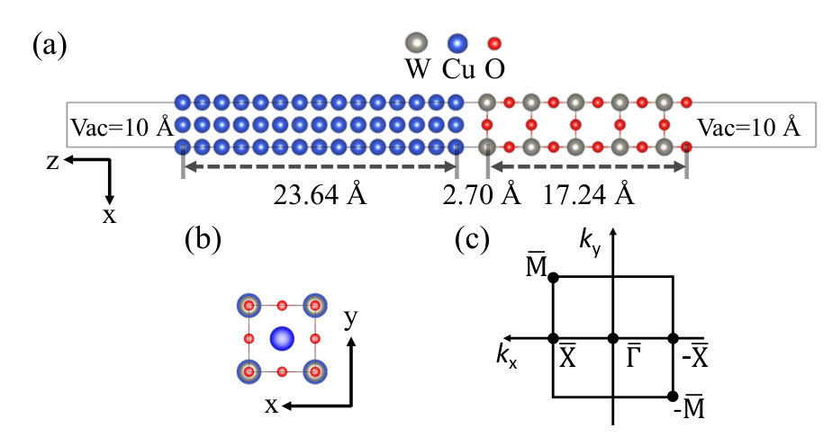
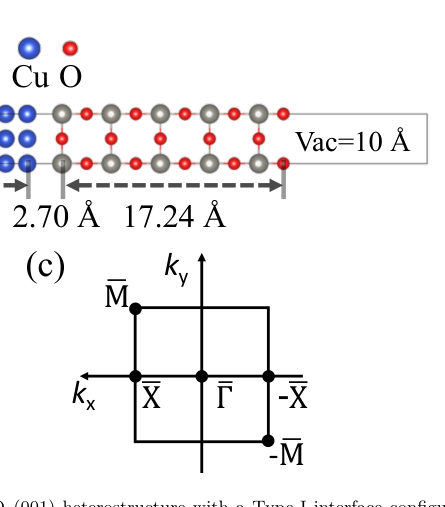
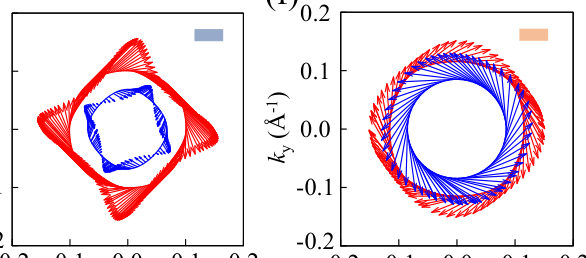
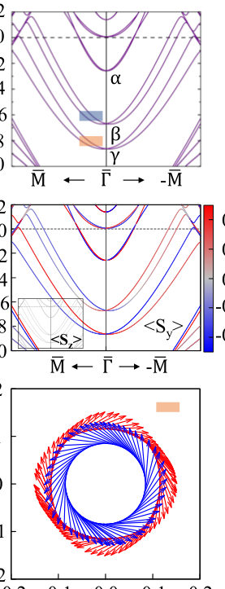
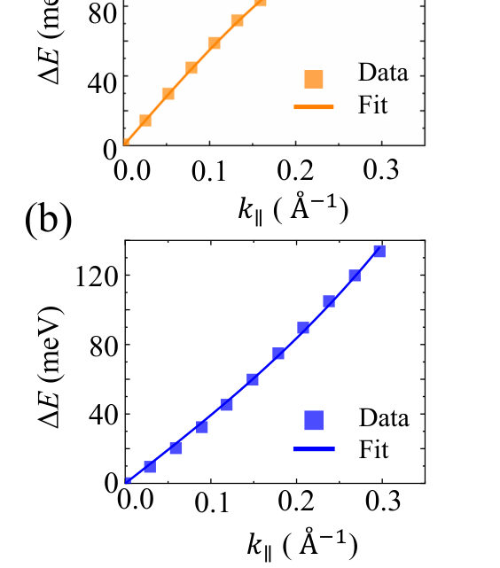
Summary. This theoretical study uses DFT calculations on the Cu/WO3 interface to demonstrate a robust spin-orbit coupling characterized by both linear and a remarkably large cubic Rashba term. The giant cubic parameter arises from orbital hybridization between W and Cu, establishing this light-metal oxide system as a novel platform for studying nonlinear spintronic phenomena.
Why it may be interesting. The discovery of a giant, tunable cubic Rashba effect in a light-metal/oxide platform opens new avenues for spintronics research beyond traditional heavy metal interfaces.
Main problem. The study investigates emergent Rashba spin-orbit interaction (SOI) at interfaces between light metals and heavy-element oxide insulators, focusing on the interplay between linear and cubic Rashba effects.
Main result. The Cu/WO3 interface exhibits a robust Rashba splitting, yielding a giant intrinsic cubic Rashba parameter ($ ilde{\alpha}_R \approx -1.93 ext{ eV}\cdot ext{\AA}^3$) driven by W-Cu orbital hybridization.
Method. First-principles Density Functional Theory (DFT) calculations were employed to model the electronic structure and spin splitting at the heterostructure interface.
Model / system. The system modeled is the Cu(001)/WO3(001) heterostructure, analyzed using slab models incorporating Spin-Orbit Coupling (SOC). The analysis examines how Rashba parameters change with Cu thickness and surface orientation.
Key observables. Rashba spin-splitting magnitude ($\Delta E(k)$), intrinsic linear ($\alpha_R$) and cubic ($ ilde{\alpha}_R$) Rashba parameters, and orbital contributions to the interface state.
Important parameters / regimes. The giant cubic Rashba parameter $ ilde{\alpha}_R \approx -1.93 ext{ eV}\cdot ext{\AA}^3$ and the linear parameter $\alpha_R \approx 0.49 ext{ eV}\cdot ext{\AA}$ are key quantitative results.
Assumptions / limitations. The calculations use a simplified cubic phase for WO3, avoiding complex room-temperature monoclinic structures, while retaining necessary symmetry for surface analysis.
Figures summary. Figures illustrate the structural model and electronic band structure/spin textures, showing momentum-resolved spin splitting ($\Delta E(k)$) confirming both linear and cubic Rashba contributions in the interface state.
Paper structure. The paper proceeds by establishing the physical model (Cu/WO3 heterostructure), calculating the electronic properties using DFT+U with SOC, extracting the energy splitting dependence on momentum to fit $\alpha_R$ and $ ilde{\alpha}_R$, and finally analyzing the thickness dependence to isolate the intrinsic cubic term.
Harnessing Rashba spin-orbit interaction and related spintronic functionalities has traditionally relied on metallic surfaces or interfaces containing elemental heavy metals. Here, using first-principles calculations and Cu(001)/WO$_3$(001) as a model heterostructure, we show that interfacing a light metal, Cu, with a band insulator, WO$_3$, yields an interface state that exhibits a robust Rashba spin splitting arising from the interplay between linear and cubic Rashba effects. The spin splitting is driven by the strong spin-orbit coupling of W atoms and enabled by W-Cu orbital hybridization at the interface. The cubic Rashba contribution asymptotically grows with Cu thickness and can be explained in terms of cross-coupling between the vacuum/Cu and Cu/WO$_3$ interfaces. This interfacial cross-coupling, however, diminishes at larger Cu thicknesses, allowing us to extract the intrinsic cubic Rashba parameter, which has a giant value of approximately -1.93 eV $Å^3$. In contrast, the linear Rashba parameter is only weakly affected by this cross-coupling and varies from approximately 0.30 to 0.49 eV Å. We further show that sizable linear and cubic Rashba effects persist across several interface geometries and Cu surface orientations, including (110) and (111). Our work identifies the Cu/WO$_3$ interface as a novel light-metal/heavy-element-based oxide platform for exploring the rich spectrum of Rashba physics, including linear and nonlinear spin-orbit phenomena.
Authors: Hang Ma, Ying Liang, Tianxing Ma
Type: theory · Category: other · PDF: https://arxiv.org/pdf/2607.13657v1
Analysis basis: full PDF text, analyzed in chunks
Topic relevance: Keldysh / 2PI / non-Gaussian methods 1/5
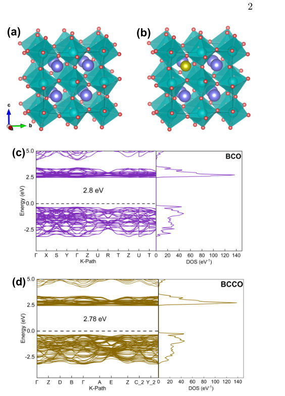
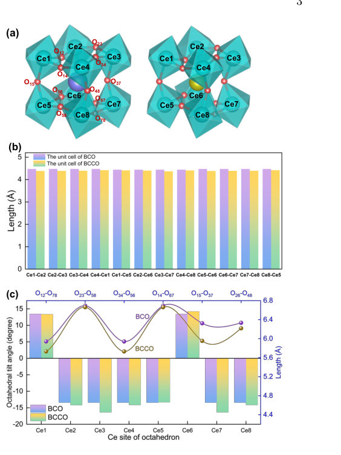
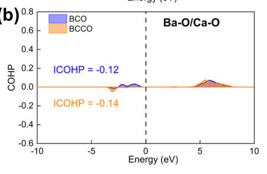
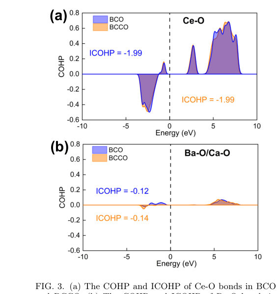
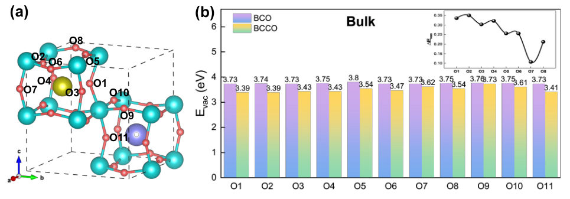
Summary. This theoretical study investigates how doping A-sites in perovskite electrolytes like BaCeO3 can boost performance for SOFCs. The authors show that using small, highly electronegative dopants simultaneously improves proton conductivity by facilitating oxygen vacancies and enhances chemical stability by weakening detrimental bonds with acidic gases.
Why it may be interesting. While focused on materials science, the underlying physics involves defect chemistry, ionic/covalent bond characterization, and energy landscape mapping using advanced computational techniques applicable to complex many-body systems.
Main problem. The primary challenge addressed is improving the chemical stability of BaCeO3-based electrolytes used in solid oxide fuel cells (SOFCs), as current doping strategies often fail to enhance both proton transport and stability simultaneously.
Main result. The study demonstrates that A-site doping with small-radius, high-electronegativity ions like Ca enhances performance by weakening A-O bonds (aiding vacancy formation) and inducing lattice contraction (improving thermal stability).
Method. The research relies heavily on first-principles calculations using DFT (VASP/PBE functional) to model structural changes, calculate defect energies, and map proton migration pathways.
Model / system. The system under investigation is the perovskite electrolyte structure, specifically comparing pristine BaCeO3 with Ca-doped variants like Ba0.875Ca0.125CeO3.
Key observables. Proton concentration/diffusion barriers, oxygen vacancy formation energy (E_vac), lattice contraction (tolerance factor change), and adsorption energies for acidic gases (CO2, SO2).
Important parameters / regimes. The key physical parameters are the ionic radii and electronegativities of the dopants, which govern the electronic and structural changes.
Assumptions / limitations. Calculations assume the Born-Oppenheimer approximation is valid for migration barriers, and the PBE functional may slightly overestimate lattice constants compared to experimental values.
Figures summary. Figures compare supercell structures of doped vs. pristine materials, show band structure/DOS comparisons, and illustrate structural changes related to doping effects.
Paper structure. The paper follows a logical progression: identifying the stability limitation -> proposing A-site doping as a solution -> using first-principles methods to quantify how small radius (lattice contraction) and high electronegativity (weakened bonding) synergistically improve both proton transport and chemical resilience.
The practical application of BaCeO$_3$-based electrolytes is limited by their poor chemical stability in proton-conducting solid oxide fuel cells. Commonly employed B-site doping strategies typically improve proton transport with limited improvement in stability. Recent experiments show that A-site Ca doping can simultaneously enhance both properties. Here, through first-principles calculations and mechanistic analysis of Ca-doped BaCeO$_3$, we identify the synergistic roles of small-radius, high-electronegativity A-site dopants in governing proton transport and chemical stability in perovskite electrolytes. We show that the higher electronegativity of A-site dopant weakens the A-O ionic bonding, facilitating oxygen-vacancy formation and enhancing proton uptake by increasing the basicity. This weakened A-O interaction also suppresses the formation of impurity phases and reduces the adsorption strength of acidic gases such as CO$_2$ and SO$_2$. The lattice contraction induced by the smaller ionic radius improves thermal stability and can enhance proton diffusion in systems where proton transfer is the rate-limiting step. Furthermore, we find that Ca surface segregation can mitigate grain-boundary resistance effects. Our results demonstrate the advantages of A-site Ca doping in Ba-based electrolytes, clarify the mechanisms by which small-radius, high-electronegativity dopants influence proton transport and chemical stability, and provide guidance for the design of high-performance proton-conducting electrolytes.
Authors: Jakkapat Seeyangnok, Udomsilp Pinsook
Type: theory · Category: other · PDF: https://arxiv.org/pdf/2607.13297v1
Analysis basis: full PDF text, analyzed in chunks
Topic relevance: Keldysh / 2PI / non-Gaussian methods 1/5
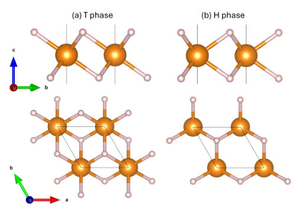
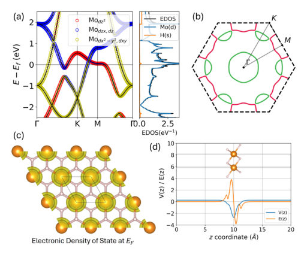
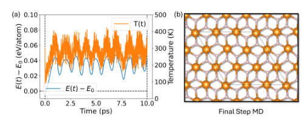
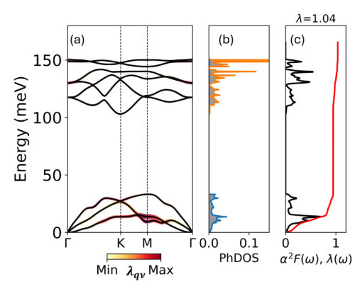
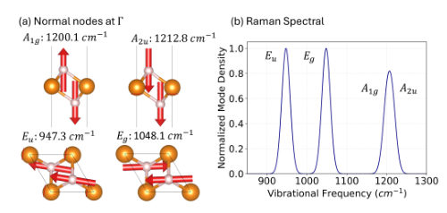
Summary. This work theoretically analyzes the T-phase $ ext{MoH}_2$ monolayer, establishing it as a stable candidate for ambient-pressure superconductivity. Using first-principles calculations, the authors predict strong electron-phonon coupling ($\lambda=1.04$) leading to a conventional superconducting transition temperature of $14.4 ext{ K}$. The findings position 2D hydrides as promising materials for low-dimensional quantum phenomena.
Why it may be interesting. While focused on condensed matter superconductivity, the rigorous application of advanced quantum many-body theory (Eliashberg equations) to a novel 2D material platform is methodologically rich for theoretical physicists.
Main problem. The study investigates structural stability and phonon-mediated superconductivity in two-dimensional (2D) transition-metal hydrides to find ambient-pressure alternatives to high-temperature superconductors.
Main result. The T-phase of $ ext{MoH}_2$ is confirmed as the stable ground state, predicting a conventional superconducting critical temperature ($T_c$) of $14.4 ext{ K}$ at ambient pressure.
Method. The research employs first-principles calculations (DFT) combined with Density Functional Perturbation Theory (DFPT) and solving the anisotropic Migdal-Eliashberg equations.
Model / system. The system modeled is the hexagonal molybdenum dihydride ($ ext{MoH}_2$) monolayer, comparing its T-phase (octahedral) to a less stable H-phase (trigonal prismatic).
Key observables. Superconducting transition temperature ($T_c$), electron-phonon coupling parameter ($\lambda$), structural energy difference, and elastic constants.
Important parameters / regimes. Ambient pressure; $\lambda = 1.04$; $T_c = 14.4 ext{ K}$; Energy stabilization of T-phase over H-phase ($0.198 ext{ eV}$).
Assumptions / limitations. The superconducting pairing mechanism is assumed to be conventional and mediated by phonons; the calculation uses a fixed Coulomb pseudopotential ($\mu^*=0.1$).
Figures summary. Figures detail structural comparisons (T vs H phase), thermal stability via AIMD, electronic structure (Fermi surface dominated by Mo $d$-orbitals), phonon dispersion/EPC spectral function ($\alpha^2F(\omega)$), and momentum-resolved superconducting gap closing.
Paper structure. The paper follows a logical progression: first establishing the ground state structural stability (T-phase vs H-phase); second, confirming mechanical and thermal robustness via elastic constants and AIMD; third, calculating electronic properties (metallicity) and phonon spectra; finally, applying the Eliashberg formalism to predict $T_c$.
The realization of ambient-pressure, high-temperature superconductivity in hydrogen-rich materials remains a major pursuit in condensed-matter physics. While bulk hydrides require extreme pressures to stabilize, two-dimensional (2D) transition-metal hydrides offer a promising alternative to bypass these compression constraints. In this work, we investigate the structural stability, electronic properties, and phonon-mediated superconductivity of a hexagonal molybdenum dihydride (MoH2) monolayer using first-principles calculations. Total-energy evaluations reveal that the octahedral T-phase is energetically more favorable than the previously reported trigonal prismatic H-phase by 0.198 eV, establishing the T-phase as the true ground-state configuration. Consequently, we systematically evaluate the lattice dynamics and superconducting properties of this ground-state T-MoH2 monolayer within the frameworks of density functional perturbation theory (DFPT) and the anisotropic Migdal-Eliashberg formalism. The transition metal-hydrogen vibrational networks induce strong electron-phonon coupling (EPC), yielding an integrated coupling parameter of λ= 1.04. Solving the anisotropic Eliashberg equations predicts a conventional superconducting transition temperature (Tc of 14.4K) at ambient pressure, characterized by a moderately gap distribution (Δ= 2.07-3.01meV at 5.0 K). Our findings highlight the T-MoH2 monolayer as a structurally, mechanically, and thermally stable platform for exploring low-dimensional conventional superconductivity under ambient conditions.